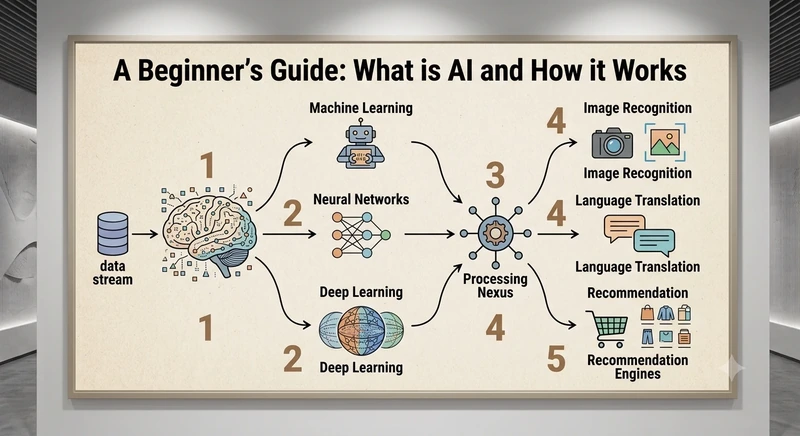

AI ToolKit Hub is a small, honest library of guides on the AI tools and ideas actually worth your attention — written to save you time, not sell you a course.
Answer two quick questions and we'll point you to the articles worth reading first.
What do you mainly want AI to help with?
Are you just starting out, or already using AI tools?
Good picks for you:
Most "AI news" sites either oversell every new tool or bury you in jargon. We do neither.
Every article tells you what a tool actually does, who it's for, and whether it's worth your time — not just why it's "revolutionary."
We focus on practical applications: workflows, comparisons, and honest trade-offs, not marketing copy repackaged as an article.
AI moves fast. We revisit and update articles as tools change, instead of leaving outdated advice online.
We test tools side by side and tell you which one actually wins for your use case — not just which one has the biggest marketing budget.
No assumed background in coding or data science. Every guide starts from zero and builds up, step by step, in plain language.
Screenshots and step-by-step instructions, not vague overviews — so you can actually follow along and get results.
Short TL;DRs at a glance for every article, so you can decide in seconds whether it's worth reading the full guide.
No paywall, no account, no email gate. Every article is fully free to read — supported by ads, not by locking content away.
Got a tool we haven't covered yet? Send it through the contact page and it may become the next guide.

New to all this? Start here. It skips the sci-fi buzzwords and explains, in plain language, what's actually happening when you use a tool like ChatGPT — no coding background needed.
Read the guideQuick, honest definitions for the terms you keep hearing but nobody quite explains. Tap a question to expand it.
Short for "Large Language Model" — the type of AI behind ChatGPT, Claude, and Gemini. It's trained on huge amounts of text to predict what word should come next, which is how it ends up able to write, answer questions, and hold a conversation.
The small chunks of text an AI model actually reads and writes in — often a word or part of a word. It's why AI tools sometimes charge or limit you by "tokens used" instead of by word count.
Simply the instructions or question you type in. The skill of writing clear, specific prompts is often the biggest difference between a useless AI answer and a genuinely useful one.
The amount of text an AI can "remember" at once during a conversation — including everything you've typed so far. Once you go past it, the model starts forgetting the earliest parts of the chat.
Taking an already-trained AI model and training it a bit further on a specific, narrower set of examples — so it gets better at one particular task or style without starting from scratch.
The internal settings a model adjusts while learning from data — often quoted in the billions for modern AI. More parameters can mean more capability, but not always; how a model is trained matters just as much.
An AI that can work with more than just text — understanding or generating images, audio, or video too, not only written language.
Open-source models publish their underlying weights so anyone can download, inspect, or run them. Closed models (like most versions of ChatGPT) are only accessible through the company's own app or API — you can use them, but not see or run the model yourself.
A growing library of articles covering the AI tools, techniques, and trends that matter right now — with more added regularly.